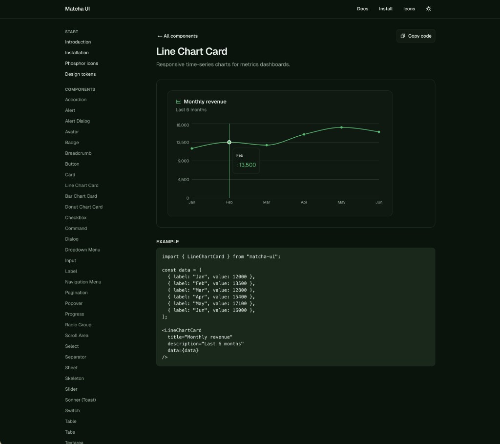
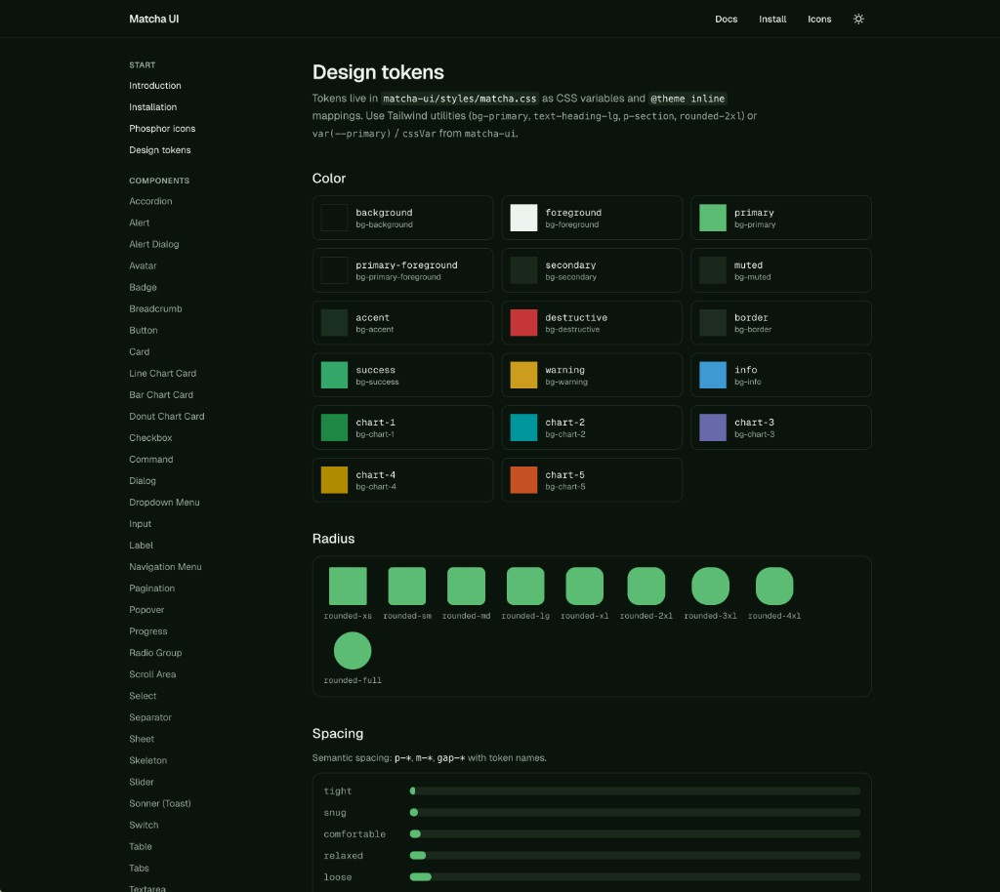
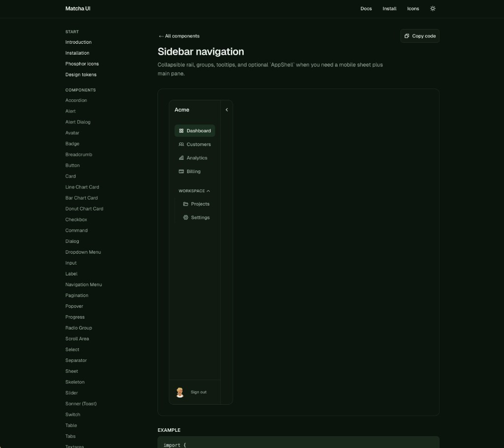
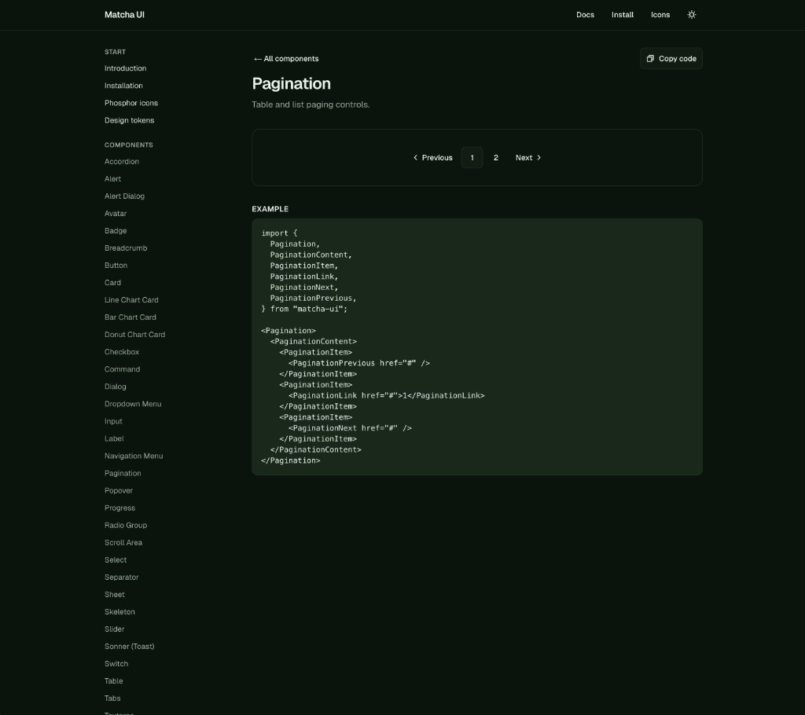

Matcha UI - Agentic Design System
Dark-first React design system with docs, OKLCH tokens, and SaaS-ready components—built for fast, consistent product UI.
React
Stack
Tailwind v4
Styling
Radix
Primitives
Docs
Site

Overview
Matcha UI is a design system and documentation site with a deep green aesthetic, component gallery, and token-driven theming. The experience mirrors modern SaaS doc sites: sidebar navigation, live previews, and copy-ready code examples.
matchaui.comHighlights
- Landing, docs layout, and component pages with consistent navigation
- Chart cards, pagination, sidebar patterns, and other dashboard primitives
- Design tokens page with color, radius, and spacing scales
- OKLCH-oriented palette and Tailwind utility mappings
Gallery
Screens from the Matcha UI documentation and marketing experience.



